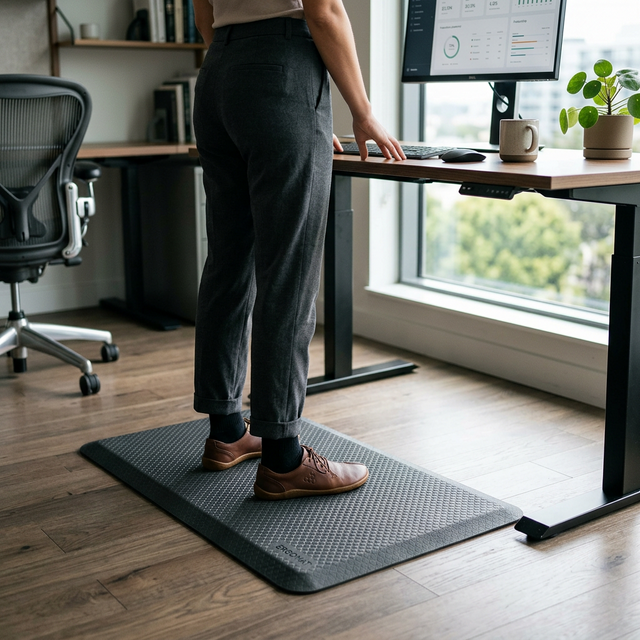
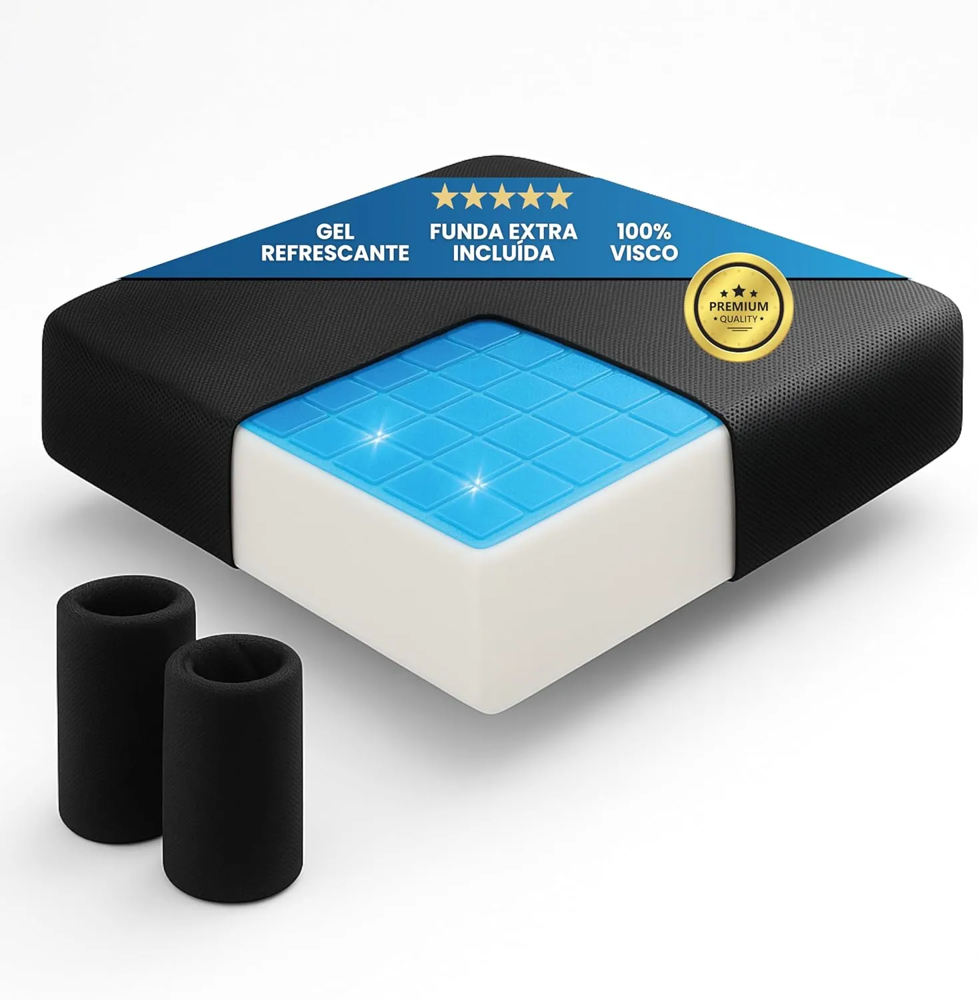

Alfombrillas antifatiga vs Cojines de Gel: Descarga tu peso de pie y sentado

Introducción
En el mundo del teletrabajo y el setup ergonómico existen dos grandes "amortiguadores" ignorados por la mayoría de las personas: las alfombrillas antifatiga para usar bajo un escritorio elevable y los cojines ortopédicos para la silla de oficina.
Aunque actúan sobre diferentes zonas del cuerpo, su objetivo biomecánico es exactamente el mismo: reducir la presión contra zonas óseas no preparadas para aguantar nuestro peso durante horas.
1. La física de la presión corporal
Trabajar teletrabajando implica luchar contra la gravedad. Si estás de pie, todo el peso de tu esqueleto recae en apenas unos centímetros cuadrados (los talones y los metatarsos). Si estás sentado, ese impacto se transfiere casi íntegramente a las tuberosidades isquiáticas (la base de tu pelvis) y, si tu asiento es duro, al coxis.
Aquí es donde entra la alfombrilla antifatiga. Estas esterillas, hechas normalmente de un polímero de poliuretano muy denso, introducen una inestabilidad minúscula (prácticamente imperceptible) bajo tus pies. Esto obliga a tus pantorrillas a realizar microcontracciones constantes para mantener el equilibrio, lo que actua como una "bomba muscular" que devuelve la sangre de las piernas al corazón previniendo las varices.

3. Cojines Ortopédicos: Para tu Silla
Por otro lado, cuando bajas la mesa a la altura normal, la presión cambia al asiento.
En este escenario de sedestación pura (para leer correos, escribir textos largos, etc.), un cojín ergonómico de oficina funciona de forma complementaria: es un amortiguador estático. Envuelve la zona pélvica pero, a diferencia de la alfombrilla antifatiga, el cojín busca **evitar** los micro-movimientos para que la columna lumbar pueda relajarse temporalmente.

Ambos accesorios son la noche y el día y no se sustituyen el uno al otro. Si tu punto flaco es la silla, tu mejor inversión (mucho antes que cambiar toda la silla) es un cojín de alta densidad viscoelástica:

Feagar Cojín Coxis Espuma Memoria
- Portátil para oficina, coche y gaming
- Funda lavable a máquina
- Espuma con memoria de alta calidad
30,99 €